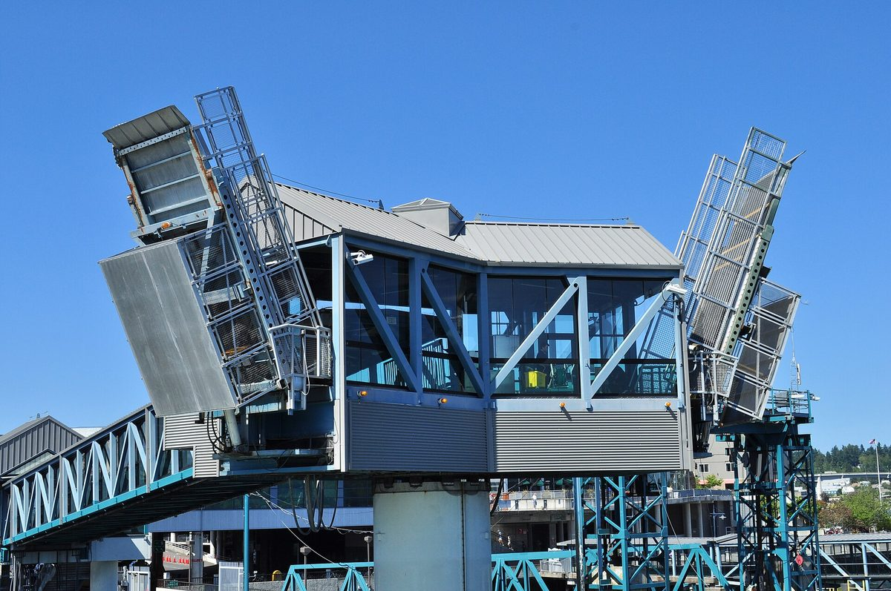

미국 워싱턴주 키챕카운티, 공익사업구 전기사업 권한 놓고 주민투표…민영 전력사 반대 운동 240만 달러 vs 찬성 자원봉사자 7,000달러

퓨젓사운드에너지 요금 2년 새 45% 올라…'제안 1호' 통과되면 약 13만 전기 계약 공영 전환 타당성 조사 길 열려, 결과는 11월 선거에서
미국 워싱턴주 키챕카운티 주민들이 11월 선거에서 카운티 공익사업구(PUD)에 전기사업 권한을 줄지 묻는 주민투표 '제안 1호(Proposition 1)'에 표를 던진다. 지금 상수도·하수도·통신만 맡고 있는 PUD가 이 권한을 얻으면 전력 설비를 사거나 지어 전기를 공급할 수 있게 되고, 카운티의 약 13만 전기 계약(유권자 약 20만 명)이 주 최대 전력회사 퓨젓사운드에너지(PSE)를 떠날 길이 열린다. 13만 건은 PSE 전체 전기 고객의 약 12%로, 통과되더라도 곧바로 공영 전환이 되는 것이 아니라 PUD가 30만~60만 달러가 드는 타당성 조사로 요금을 실제로 낮출 수 있는지부터 따지게 된다. 투표의 배경에는 요금 부담이 있는데, PSE 전기요금은 2020년 이후 두 배가 됐고 최근 2년 동안 45% 올라 한 달 800kWh를 쓰는 평균 가구가 내는 돈이 110달러에서 160달러로 늘었으며, PSE는 3년에 걸쳐 29%를 더 올리겠다는 안을 주 규제기관에 내 둔 상태다. PSE는 반대 운동에 240만 달러를 써 최근 20년 사이 주 안 지역 주민투표 가운데 가장 비싼 운동의 하나가 됐고, 찬성 쪽 자원봉사자 모임이 지난주까지 모은 돈은 약 7,000달러로 찬성 운동에 나선 한 자원봉사자는 "지금 저 골리앗과 싸우고 있다"고 말했다. PSE 측은 조사도 하지 않고 투표부터 한다고 PUD를 비판하며 시장 여건상 카운티 요금이 실제로 내려갈지 의문이라는 입장이고, PUD 측은 전기사업 권한도 없이 조사 비용을 쓰기는 어렵다고 설명했다.
시민에너지 관점
요금이 2년 새 45% 오른 지역에서 주민들이 전력 공급의 주인을 바꿀 수 있는지 묻는 투표를 치르는데, 한쪽은 240만 달러, 다른 쪽은 7,000달러로 맞선다는 사실이 이 질문의 무게를 보여 준다. 공공이 전력을 맡으면 전환 비용만 늘고 요금이 오히려 오를 수 있다는 우려는 타당성 조사로 꼼꼼히 따져야 할 문제이지, 주민이 선택할 기회 자체를 막을 이유는 되지 않는다. 독일 함부르크 시민들은 2013년 주민투표로 시가 민간에 넘겼던 에너지망을 다시 사들이도록 결정했고, 시는 이후 전력망과 가스망, 지역난방망을 차례로 되찾았다. 국내에서도 지자체 에너지공사와 주민 협동조합이 지역 전력의 생산과 공급을 함께 소유할 수 있도록, 주민이 스스로 묻고 정할 수 있는 제도의 문을 열어야 한다.
출처: The Seattle Times 2026-10-26 Amanda Zhou 원문 보기
米ワシントン州キトサップ郡、公益事業区に電力事業の権限を与えるか住民投票…民間電力会社の反対運動240万ドル対賛成派ボランティア7,000ドル
ピュージェット・サウンド・エナジーの料金は2年で45%上昇…「提案1号」が可決されれば約13万の電力契約の公営化に向けた事業性調査に道、結果は11月の選挙で
米ワシントン州キトサップ郡の住民は、11月の選挙で、郡の公益事業区（PUD）に電力事業の権限を与えるかどうかを問う住民投票「提案1号（Proposition 1）」に票を投じる。現在、上下水道と通信だけを担うPUDがこの権限を得れば、電力設備を買い取るか建設して電気を供給できるようになり、郡内の約13万の電力契約（有権者約20万人）が州最大の電力会社ピュージェット・サウンド・エナジー（PSE）から離れる道が開ける。13万件はPSEの電力顧客全体の約12%に当たり、可決されてもすぐに公営化されるわけではなく、PUDがまず30万〜60万ドルかかる事業性調査で料金を実際に下げられるかを検証することになる。投票の背景には料金負担があり、PSEの電気料金は2020年以降2倍になり、直近2年で45%上がって、月800kWhを使う平均的な家庭の支払いは110ドルから160ドルに増えた。PSEはさらに3年で29%引き上げる案を州の規制当局に申請している。PSEは反対運動に240万ドルを投じ、過去20年で州内の地方住民投票として最も高額な運動の一つとなった一方、賛成派ボランティアのグループが先週までに集めた資金は約7,000ドルで、賛成運動に加わるボランティアの一人は「今、あのゴリアテと戦っている」と語った。PSE側は事業性調査もせずに投票を先に行うとPUDを批判し、市場の状況から郡の料金が実際に下がるか疑問だとの立場で、PUD側は電力事業の権限もないまま調査費を使うのは難しいと説明している。
市民エネルギーの視点
料金が2年で45%上がった地域で、住民が電力供給の主人を替えられるかを問う投票を行い、一方は240万ドル、もう一方は7,000ドルで向き合っているという事実が、この問いの重さを物語っている。公営化すれば移行費用ばかり膨らみ料金がかえって上がりかねないという懸念は、事業性調査で丁寧に検証すべき問題であって、住民が選ぶ機会そのものを閉ざす理由にはならない。ドイツのハンブルク市民は2013年の住民投票で、市が民間に手放したエネルギー網を買い戻すよう決め、市はその後、電力網、ガス網、地域熱供給網を順に取り戻した。韓国でも、自治体のエネルギー公社と住民協同組合が地域の電力の生産と供給をともに所有できるよう、住民が自ら問い、決められる制度の扉を開くべきだ。
出典: シアトル・タイムズ 2026-10-26 アマンダ・ジョウ 原文を読む
美国华盛顿州基察普县就是否授予公用事业区电力业务权举行公投，民营电力公司反对运动投入240万美元，支持方志愿者仅筹7,000美元
普吉特湾能源公司电价两年上涨45%；"第1号提案"若获通过，将为约13万个电力账户转为公营的可行性研究铺路，结果取决于11月选举
美国华盛顿州基察普县的居民将在11月选举中，就是否授予县公用事业区（PUD）电力业务权的公投"第1号提案（Proposition 1）"投票。目前只负责供水、污水和通信的PUD一旦获得这一权限，就可以购买或建设电力设施供电，县内约13万个电力账户（约20万名选民）将有机会脱离州内最大的电力公司普吉特湾能源公司（PSE）。13万户约占PSE全部电力用户的12%；即使提案通过，也不会立即转为公营，PUD首先要通过一项耗资30万至60万美元的可行性研究，核实能否真正降低电价。投票的背景是电费负担：PSE的电价自2020年以来翻了一番，近两年上涨45%，每月用电800千瓦时的普通家庭电费从110美元增至160美元，PSE还向州监管机构申请在三年内再上调29%。PSE为反对运动投入240万美元，成为近20年来州内最昂贵的地方公投运动之一；而支持方志愿者团体截至上周仅筹得约7,000美元，一位参与支持运动的志愿者说："我现在正在和那个歌利亚作战。"PSE方面批评PUD未做研究就先投票，并认为在市场条件下县内电价是否真能下降存疑；PUD方面则表示，在没有电力业务权的情况下难以花费研究经费。
市民能源视角
在电价两年上涨45%的地区，居民就能否更换电力供应的主人举行投票，一方投入240万美元，另一方只有7,000美元，这一事实本身就说明了这个问题的分量。公营后过渡成本膨胀、电价反而上涨的担忧，应当通过可行性研究认真核实，而不能成为剥夺居民选择机会的理由。德国汉堡市民在2013年通过公投，决定让市政府买回此前交给私营企业的能源网络，此后汉堡陆续收回了电网、燃气管网和区域供热网。韩国也应打开制度之门，让地方政府能源公社和居民合作社能够共同拥有地方电力的生产与供应，让居民可以自己提出问题、自己做出决定。
来源: 西雅图时报 2026-10-26 Amanda Zhou 查看原文
Kitsap County, Washington, votes on giving its public utility district electric authority: $2.4 million utility opposition campaign vs $7,000 raised by volunteers
Puget Sound Energy rates are up 45% in two years; if Proposition 1 passes, the way opens to a feasibility study on taking about 130,000 electric connections public, with the outcome decided in the November election
Voters in Kitsap County, Washington, will decide in the November election on Proposition 1, a ballot measure asking whether to give the county's public utility district (PUD) the authority to provide electricity. The PUD now handles only water, sewer and telecommunications; with that authority it could buy or build infrastructure to supply power, opening a path for about 130,000 electric connections in the county, representing some 200,000 voters, to leave Puget Sound Energy (PSE), the state's largest utility. Those 130,000 connections are about 12% of PSE's electric customers, but passage would not mean an immediate switch to public power: the PUD would first carry out a feasibility study costing $300,000 to $600,000 to see whether rates could actually come down. Behind the vote are rising bills: PSE's electricity prices have doubled since 2020 and risen 45% in the past two years, so an average household using 800 kilowatt-hours a month now pays $160 instead of $110, and PSE has asked state regulators for a further 29% increase over three years. PSE has spent $2.4 million against the measure, making it one of the most expensive local ballot campaigns in the state in two decades, while the volunteer group backing it had raised about $7,000 as of last week; one volunteer said she was "fighting that Goliath right now." PSE criticises the PUD for holding the vote before any study and questions whether the county would actually see cheaper rates given market conditions, while PUD officials say they are reluctant to spend money on a study without the authority to form an electric service.
Citizen Energy View
That residents of a county where rates have risen 45% in two years are voting on whether they can change who supplies their power, with one side spending $2.4 million and the other $7,000, shows how weighty the question is. The worry that public power could inflate transition costs and even raise rates is a matter to be examined carefully in a feasibility study, not a reason to deny residents the chance to choose. In Hamburg, Germany, citizens voted in a 2013 referendum for the city to buy back the energy networks it had handed to private companies, and the city went on to take back its electricity, gas and district heating grids one after another. Korea, too, should open the door to rules that let local energy corporations and residents' cooperatives jointly own the generation and supply of local power, so that residents can raise the question and decide it themselves.
Source: The Seattle Times 2026-10-26 Amanda Zhou Read the original